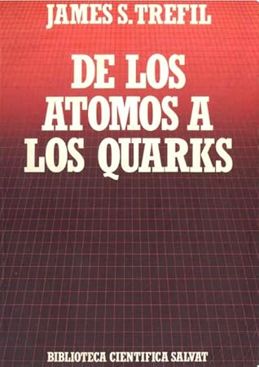

De los átomos a los quarks
Reseña por Jorge I. Zuluaga

Ver reseña en GoodReads (necesita cuenta)
No lo leía desde que tenía 15 o 16 años y como todo lo que es bueno, la segunda vez se disfruta más.
El libro hace un recorrido relativamente exhaustivo por la historia de descubrimiento de la estructura fundamental de la materia, desde el descubrimiento del electrón a finales de los 1800 hasta el descubrimiento de los quarks a finales de los años 1970. Es cierto el libro es viejito y entre la época en la que Treffil lo termino de escribir y el presente ha pasado mucha agua por el río de la física fundamental, pero la mayor parte de lo que describe (en su mayoría eventos históricos) sigue siendo tan válido como en los años 80.
Es para mi muy difícil hoy juzgar el nivel preciso del libro. Creo que la mayoría de quienes tienen una formación en física lo encontraran fácil de leer y entender y aún así muy ilustrativo y entretenido.
Creo que es común que entre los profesionales de una disciplina no haya muchos que leen libros divulgativos de su propia área. La física no es la excepción, e incluso diría más bien que es el prototipo: hay tantos libros divulgativos de física y tan pocos físicos leyéndolos. Debo confesar que yo mismo era renuente a hacerlo, creía que todo sería muy trillado. ¡Pero no! En realidad me arrepiento profundamente de no haber leído más divulgación durante mis años de formación avanzada.
¡Cuánto me habría ayudado este librito para entender la manera como se conectaban ideas, experimentos y teorías aparentemente desconectados!
Creo (pero insisto en mi falta de objetividad en este caso) que no es un libro legible por todos. Peca, como lo hacen muchos libros de divulgación en física, de suponer que cosas que consideramos importantes los físicos, serán también importantes para todos. No falta una que otra ecuación y eso siempre se ha considerado un defecto en los textos divulgativos. ¡Pero cómo no incluirlas en un libro de física! Todavía no veo cómo podrían transmitirse los sentimientos alrededor de ciertas ideas y descubrimientos sin introducir un razonamiento matemático.
Diría más bien que es un libro para gomosos (expertos o no expertos).
En síntesis; para el que apenas comienza tal vez sea un poco difícil de digerir; para el gomoso es una bonita e ilustrativa pieza de divulgación con algunos de los más apasionantes temas de la física; pero para el físico tal vez sea la mejor manera de, sin el peso de la academia y todo el formalismo, comprender en panorámica el desarrollo de la física de partículas.